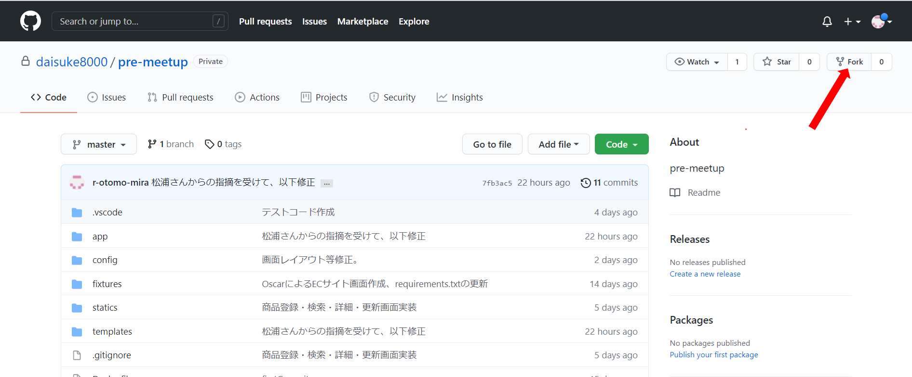
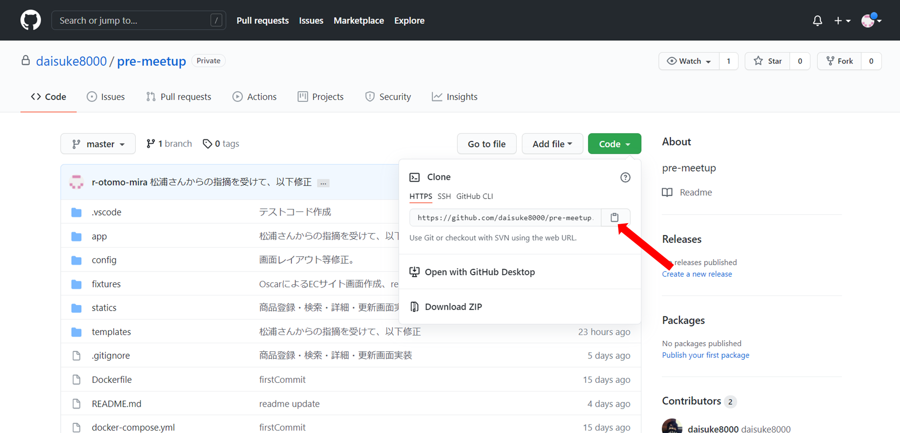

デモアプリクローン
当手順では以下の赤枠部分を実施します。
※暫定の絵です※
1. Githubリポジトリ表示
以下リンクよりデモアプリのあるGithubリポジトリにアクセスします。 URL:https://github.com/miracleave-ltd/meet-up-22-django(仮)
※正式Git用意され次第キャプチャ差し替え※

2. リポジトリコピー
Forkボタンを押下します。
※正式Git用意され次第キャプチャ差し替え※ 
※Forkボタン押下後、Githubにログインしている方は自動で自身のリポジトリに遷移します。
3. クローン用URL取得
自身のリポジトリにコピーされたアプリのURLをコピーします。
※正式Git用意され次第キャプチャ差し替え※ 
4. アプリクローン
以下操作をコマンドプロンプトにて行い、GitHubよりアプリを取得します。
例：デスクトップにクローンする場合
cd ~/Desktop
アプリをクローンします。GitHubよりコピーしたURLを使用してください。
git clone [コピーしたURL]
最終行にdone.が表示されれば完了です。
Cloning into 'pre-meetup'...
remote: Enumerating objects: 162, done.
remote: Counting objects: 100% (162/162), done.
remote: Compressing objects: 100% (110/110), done.
remote: Total 162 (delta 61), reused 141 (delta 40), pack-reused 0
Receiving objects: 100% (162/162), 55.28 KiB | 243.00 KiB/s, done.
Resolving deltas: 100% (61/61), done.
次の手順を進めるに当たり、クローン後に作成されたフォルダをVSCodeで開くようお願いします。
5. サイトを立ち上げてみる
デモアプリを修正していない状態で、一度サイトを起動してみましょう。
5.1. Dockerの起動
以下コマンドを実施し、Dockerの起動を行います。
以下イメージのように Creating <Dockerコンテナ名> ... done と表示されると成功です。
docker-compose up -d --build

5.2. マイグレーションを実施
以下のコマンドを実行し、モデルファイルに記載された内容を元にテーブルの作成を実施します。
(補足)
VSCodeのターミナル上から実施してください。
クローンしたデモアプリのルートフォルダに移動した状態で実施してください。
docker-compose run web python manage.py makemigrations
makemigrations実行後、以下のようなメッセージが表示されると成功です。

docker-compose run web python manage.py migrate
migrate実行後、以下のようなメッセージが表示されると成功です。
5.3. スーパーユーザーの作成
以下コマンドを実施し、作成したWEBサイトにて使用するユーザー情報を作成します。
docker-compose run web python manage.py createsuperuser
設定する値はそれぞれ以下の通りとしてください。
- ユーザー名：任意の名称
- メールアドレス：未設定（そのままEnter）
- パスワード：任意の値（単純すぎるものは警告が出ます）
上記までの手順で、ブラウザに以下URLを入力することで画面を参照することが出来ます。